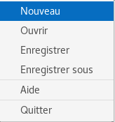

Le menu :

Nouveau : ouvre un nouveau script vierge.
Ouvrir : ouvre un script existant. Une fenêtre sélecteur de fichiers apparaît.
Il est possible de choisir d'afficher tous les fichiers ou seulement les fichiers ".fil".
Enregistrer : enregistre le script courant. Si il n'y a pas encore de sauvegarde une fenêtre sélecteur de fichiers apparaît.
Enregistrer sous : enregistre le script courant sous un nouveau nom. Une fenêtre apparaît afin de définir le fichier destination.
Aide : Affiche la page d'aide
Quitter : quitte edifil.